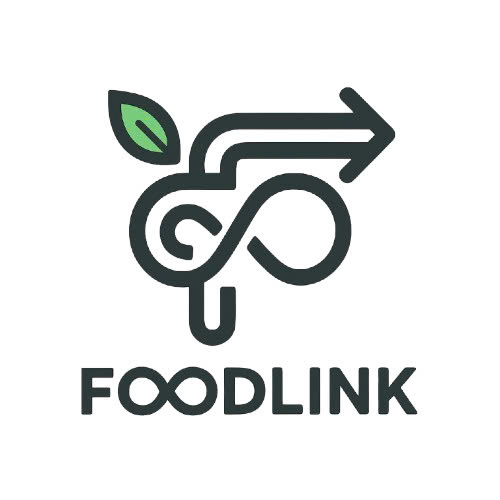

FOODLINK
Trang chủ
Cửa hàng
Sự kiện
Liên hệ
Điểm công dân của bạn
765
Cấp độ: Người Hỗ Trợ Vàng
Lịch sử hoạt động
Ngày
Hoạt động
+/- Điểm
22/04/2025
Chia sẻ 5 suất ăn
+50
20/04/2025
Báo cáo thực phẩm hỏng
+20
19/04/2025
Không xác nhận đơn hàng
-10